Front
BURNOUT is not a STAFFING STRATEGY You are setting us ALL up for failure!Artist’s voice
The artist’s own words.
Pumpkins for Family Preservation · Year 7
Every word on this year’s pumpkins, with the document it comes from, the exact page, and a link that opens it.
Part of the Iowa HHS Audit Request public record. Source documents: Transparency Hub ↗
A citizen-initiated page, not affiliated with any government agency.
Draft view: items still being confirmed are shown. Remove ?draft from the address to see the public view. Order proposed, not final.
These seven pumpkins were delivered to a county Department of Human Services office on November 2, 2026. The photographs document the finished artwork. Each exhibit pairs painted inscriptions with source references and clearly identified artist commentary.
Source means the document and page were checked.
Artist’s voice identifies opinion, interpretation, or personal account.
A missing source link does not mean a record is unavailable; it means a public link has not yet been confirmed.
References to planned technology are not claims that it is in live use. Ratings across different federal review rounds are not directly comparable.
On the front: BURNOUT is not a STAFFING STRATEGY. You are setting us ALL up for failure!
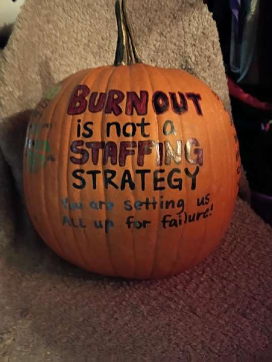
Front
BURNOUT is not a STAFFING STRATEGY You are setting us ALL up for failure!Artist’s voice
The artist’s own words.
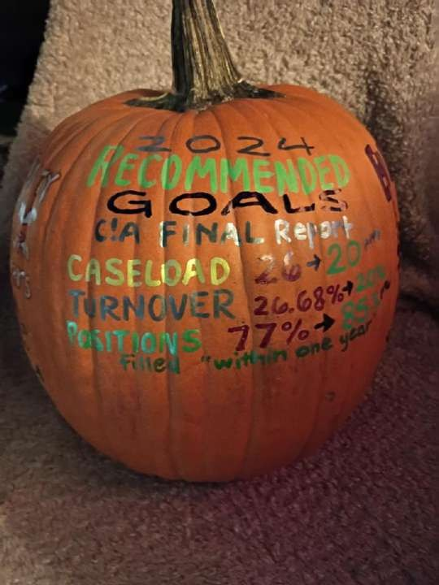
Side · Recommended goals
2024 RECOMMENDED GOALS C!A FINAL Report CASELOAD 26 → 20 TURNOVER 26.68% → 20% POSITIONS filled 77% → 85% "within one year"
Consultant-recommended goals, not measured outcomes or established HHS commitments. The report gives a 2021 average of 25 elsewhere, although the recommendation begins at 26.
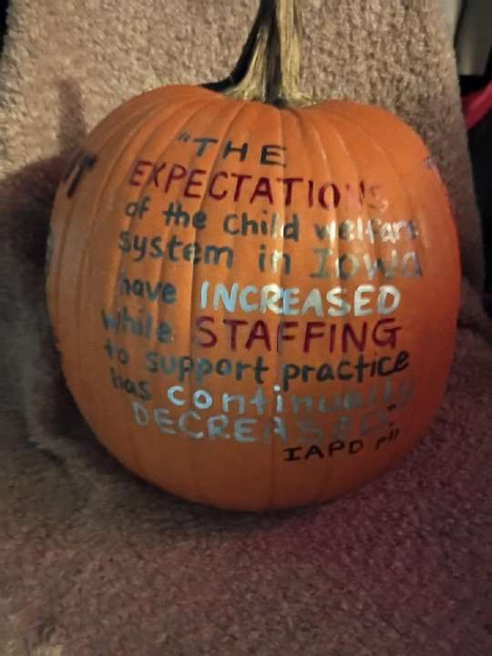
Side · Staffing
"THE EXPECTATIONS of the child welfare system in IOWA have INCREASED while STAFFING to support practice has continually DECREASED." IAPD p11
A statement in the State’s federal funding plan, obtained through an open records request. The agency-produced records are hosted on the Transparency Hub Document Hub; the ORR Log documents the request history.
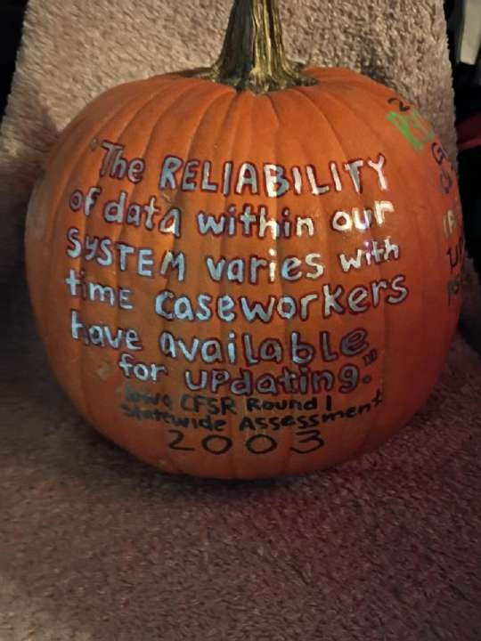
Back · Data reliability
"The RELIABILITY of data within our SYSTEM varies with time caseworkers have available for updating." Iowa CFSR Round 1 Statewide Assessment 2003
A focus-group remark recorded in the State’s assessment, not an official finding.
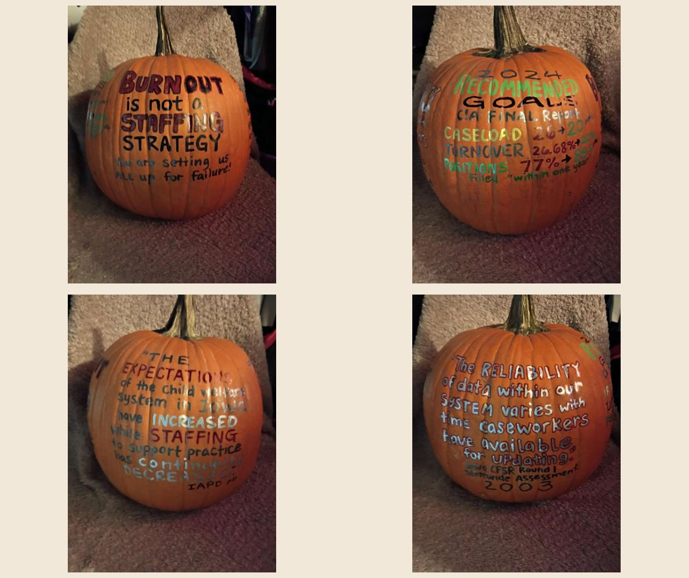
On the front: IN MANY SERVICE AREAS, New SWCMs training new SWCMs.
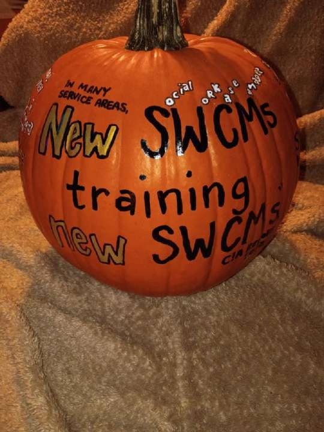
Front
IN MANY SERVICE AREAS, New SWCMs training new SWCMs. (small, above SWCMs: Social Worker Case Managers)
SWCM means Social Work Case Manager. The credit is cropped in the photograph.
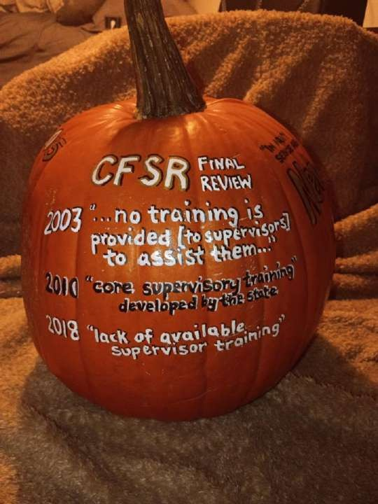
Side 1 · Federal review timeline
CFSR FINAL REVIEW 2003 "...no training is provided [to supervisors] to assist them..." 2010 "core supervisory training" developed by the state 2018 "lack of available supervisor training"
Three excerpts about supervisor training, not comparable scores. The 2018 quotation has no trailing ellipsis. The 2003 and 2011 Iowa reports are hosted on the Transparency Hub Document Hub.
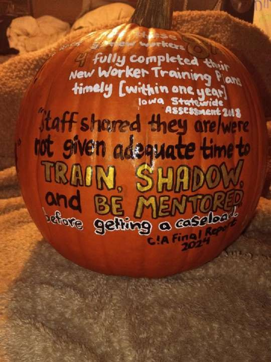
Side 2 · New-worker training
"Of these 52 new workers 4 (8%) fully completed their New Worker Training Plans timely" [within one year] Iowa Statewide Assessment 2018 "Staff shared they are/were not given adequate time to TRAIN, SHADOW, and BE MENTORED before getting a caseload" C!A Final Report 2024
Four of 52 completed their plans on time; this does not mean the remaining 48 received no training.
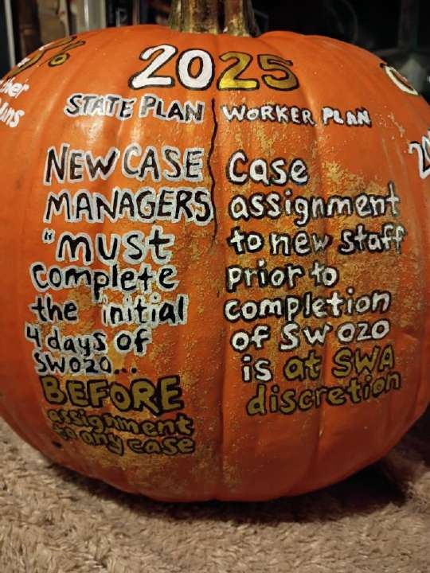
Back · 2025 plans
2025 STATE PLAN: NEW CASE MANAGERS "must complete the initial 4 days of SW020... BEFORE assignment to any case" WORKER PLAN: Case assignment to new staff prior to completion of SW020 is at SWA discretion. SWA = Administrator
The State plan requires four days of SW 020 before case assignment; the worker plan allows Social Work Administrator discretion before completion.
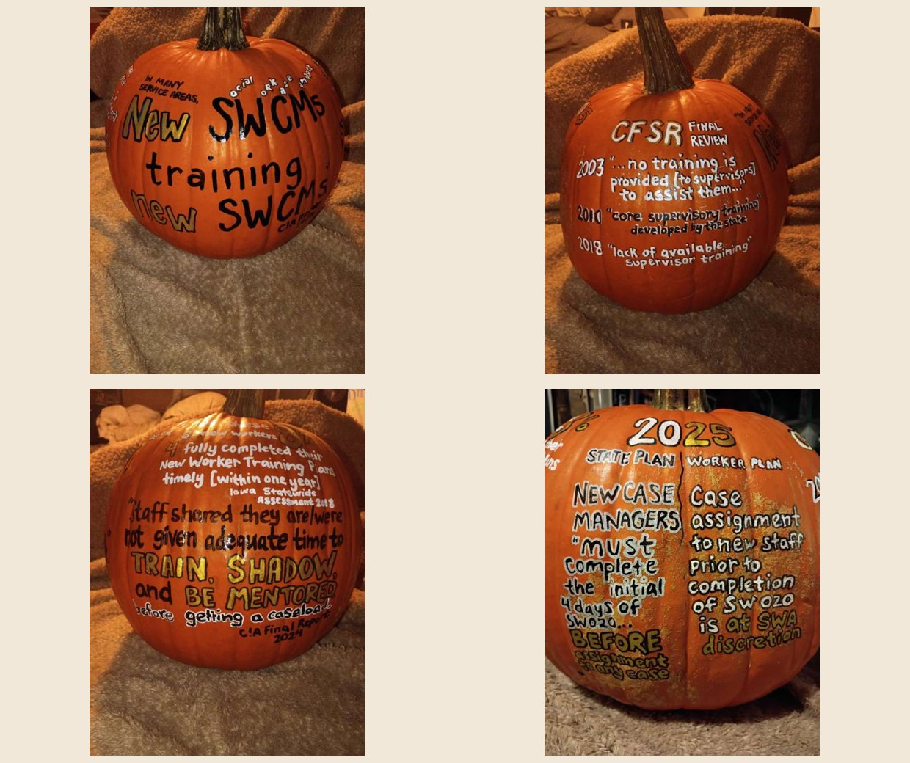
On the front: GARBAGE in, GOSPEL out?
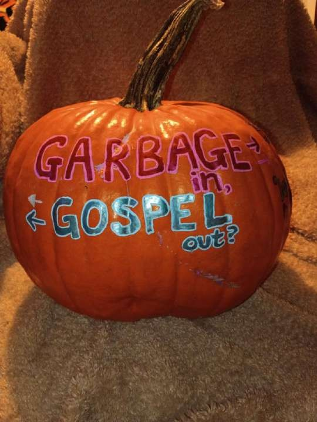
Front
GARBAGE in, GOSPEL out?Artist’s voice
The artist’s variation on the computing proverb “garbage in, garbage out.”
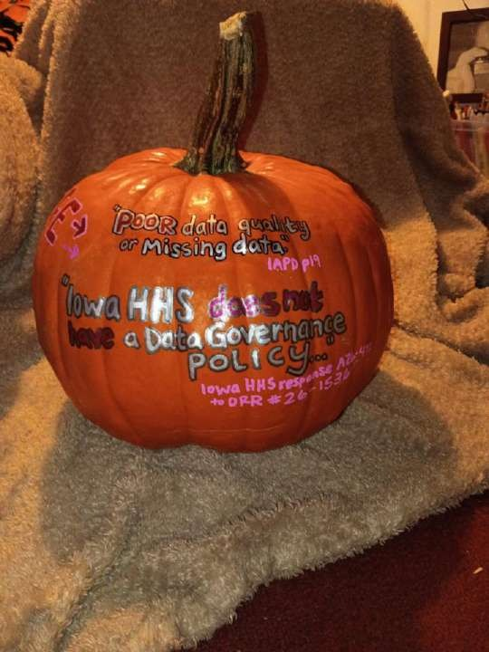
Right side · Data governance
"POOR data quality or Missing data." IAPD p19 "Iowa HHS does not have a Data Governance POLICY..." Iowa HHS response A26-472 to Open Records Request #26-1536
The first statement concerns the old system. The response also lists other existing policies; new-platform governance documents are described in the IAPD. The agency-produced records are hosted on the Transparency Hub Document Hub; the ORR Log documents the request history.
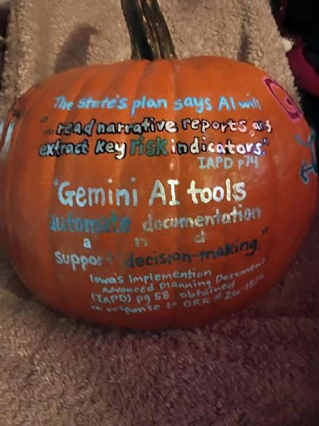
Left side · AI tools
The state's plan says AI will "...read narrative reports, and extract key risk indicators." IAPD p74 "Gemini AI tools automate documentation and support decision-making." Iowa's Implemention [sic] Advanced Planning Document (IAPD) pg 58, obtained in response to ORR #26-1536
These are planned capabilities, not evidence that AI is live or has produced an incorrect answer. The agency-produced records are hosted on the Transparency Hub Document Hub; the ORR Log documents the request history.
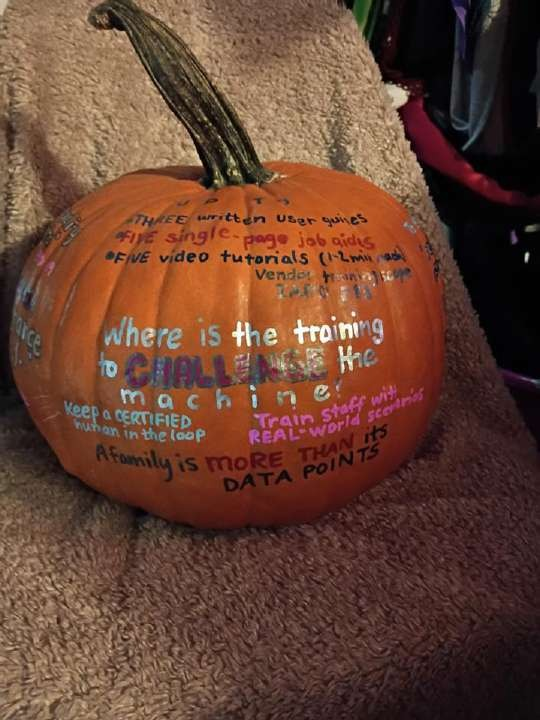
Back · Vendor training and artist’s recommendations
UP TO THREE written user guides FIVE single-page job aids FIVE video tutorials (1-2 min each) Vendor training scope, IAPD p83 Where is the training to CHALLENGE the machine? Keep a CERTIFIED human in the loop | Train staff with REAL-world scenarios A family is MORE THAN its DATA POINTS
The vendor deliverables are sourced. The question and recommendations are the artist’s; certification is not represented as an Iowa requirement. The agency-produced records are hosted on the Transparency Hub Document Hub; the ORR Log documents the request history.
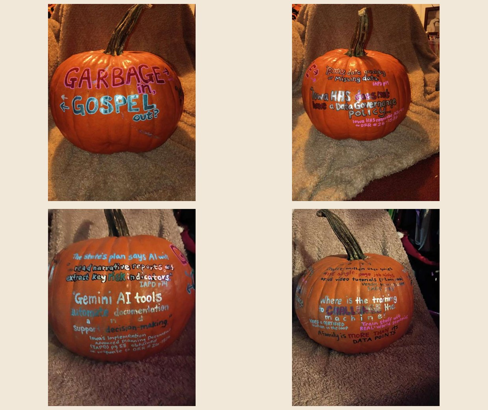
On the front: HOPE is not a Plan that will magically fix What is BROKEN
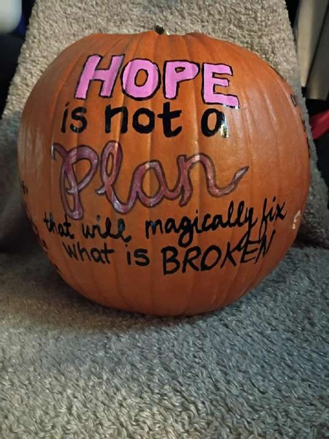
Front
HOPE is not a Plan that will magically fix What is BROKENArtist’s voice
A response to the State’s strategy, not a claim that Iowa has no plan.
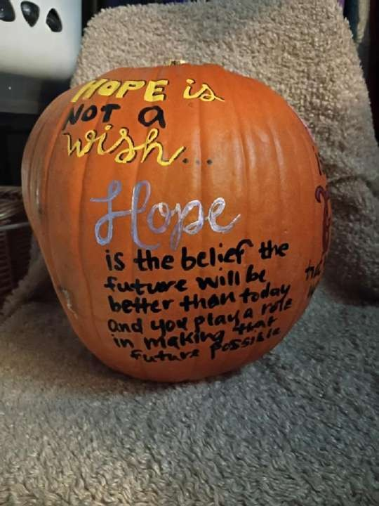
Side · Hope is not a wish
HOPE is NOT a wish... Hope is the belief the future will be better than today and you play a role in making that future possible
The source includes a comma after “today” and places the belief statement before “Hope is not a wish.”
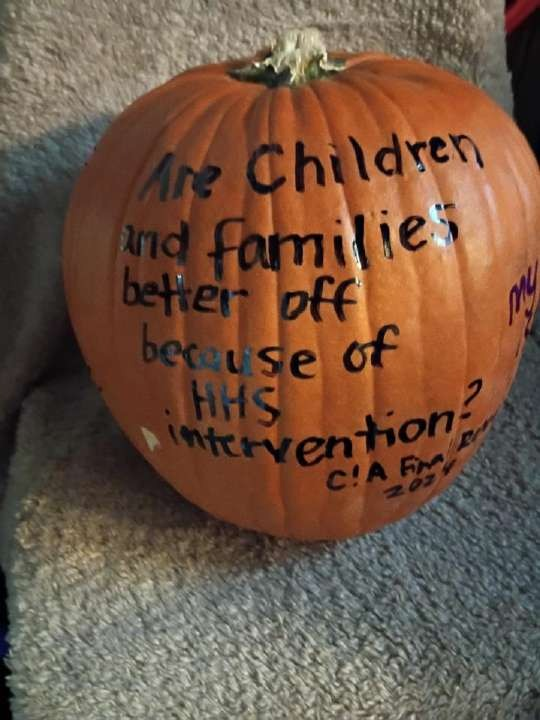
Side · The question
Are Children and families better off because of HHS intervention? C!A Fin[al Report] 202[4]
The report identifies this as its pivotal question and says measuring interventions over a case is a national challenge. The credit is cropped in the photograph.
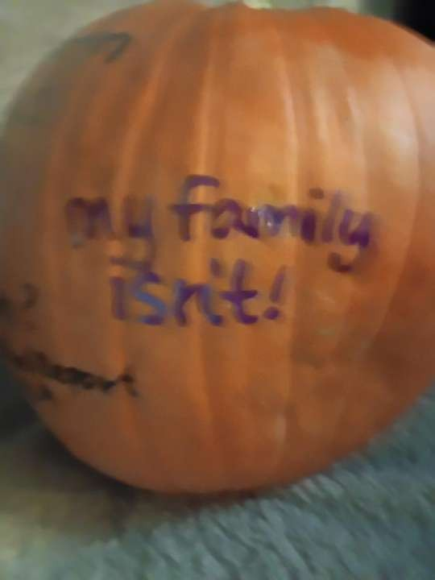
Back
my family isn't!Artist’s voice
The artist’s own words, not a measured statewide outcome.
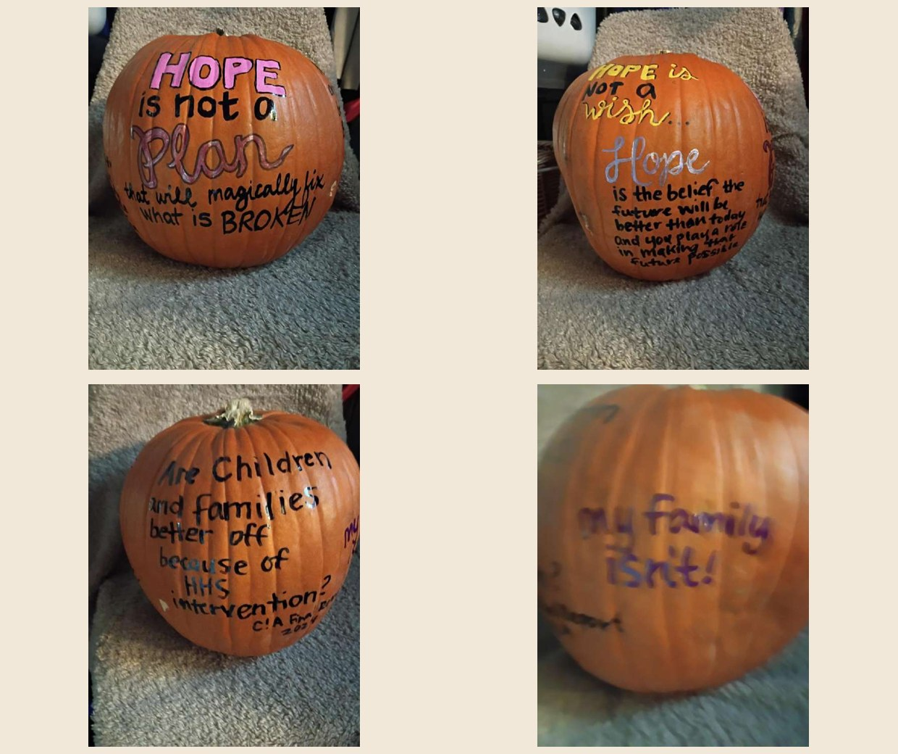
On the front: Parents are Stakeholders not Spectators
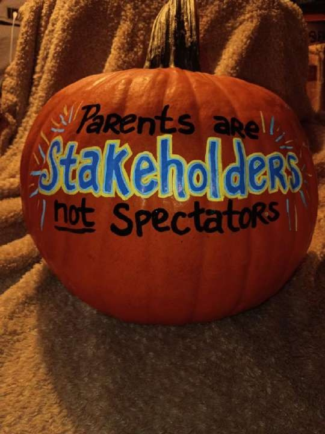
Front
Parents are Stakeholders not SpectatorsArtist’s voice
The artist’s statement.
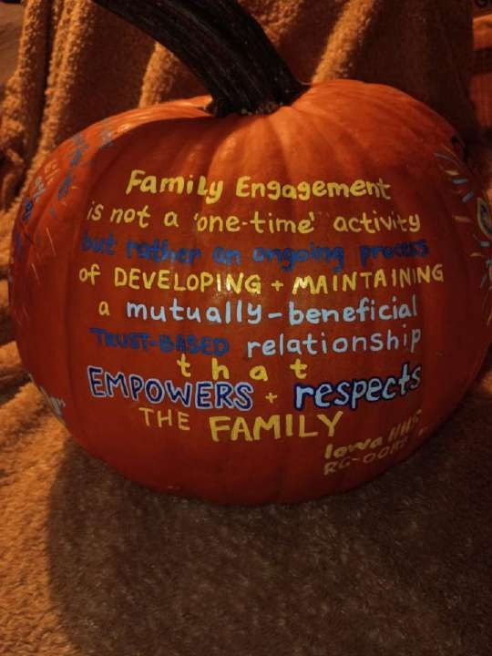
Side · Family engagement
"Family Engagement is not a 'one-time' activity but rather an ongoing process of DEVELOPING + MAINTAINING a mutually-beneficial TRUST-BASED relationship that EMPOWERS + respects THE FAMILY." Iowa HHS RC-008[2]
The painted capitals and “+” reflect lettering choices. The document credit is partly cropped.
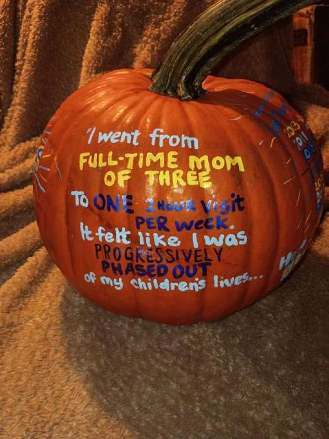
Side · In the artist’s words
"I went from FULL-TIME MOM OF THREE To ONE 2 HOUR visit PER week. It felt like I was PROGRESSIVELY PHASED OUT of my children's lives..."Artist’s voice
The artist’s personal account; not presented as a formal finding.
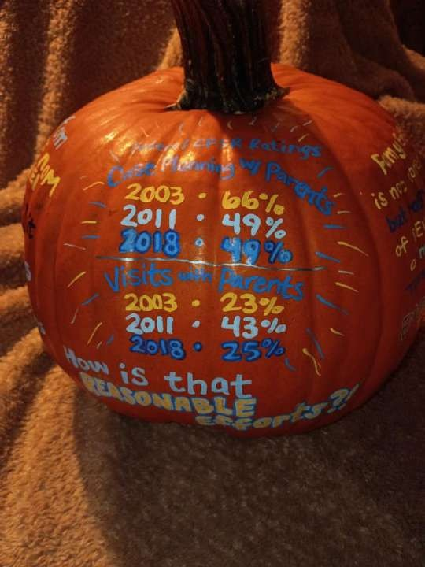
Back · Federal ratings
Federal CFSR Ratings Case Planning w/ Parents: 2003 · 66% / 2011 · 49% / 2018 · 49% Visits with Parents: 2003 · 23% / 2011 · 43% / 2018 · 25% How is that REASONABLE efforts?!
Review methods and items changed. The Round 3 report says results are not directly comparable to Round 2; these percentages must not be called a measured decline. The 2003 and 2011 Iowa reports are hosted on the Transparency Hub Document Hub.
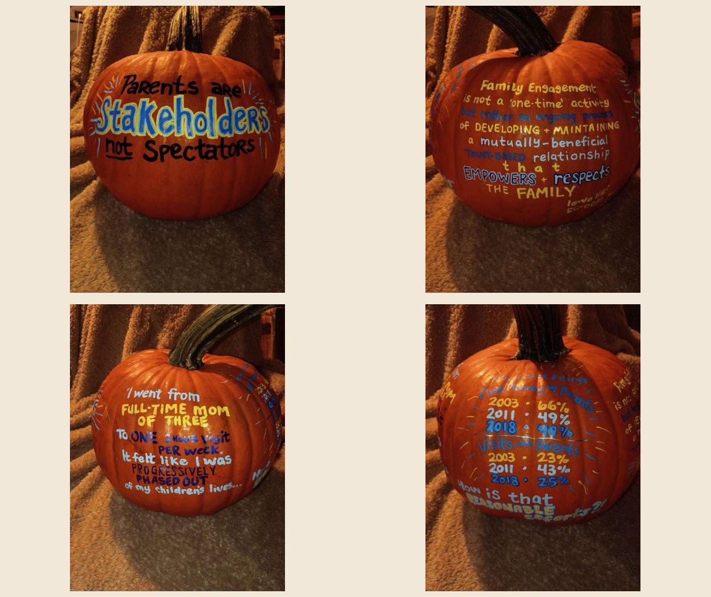
On the front: Who will WATCH the WATCHERS
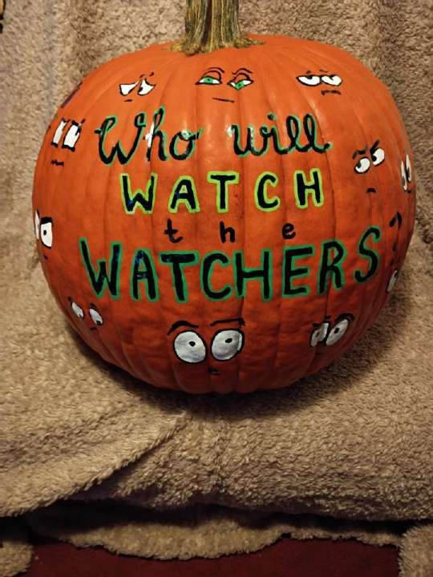
Front
Who will WATCH the WATCHERSArtist’s voice
The artist’s question.
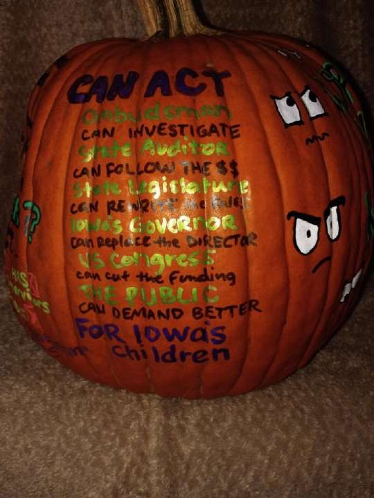
Side · Who can act
CAN ACT Ombudsman CAN INVESTIGATE State Auditor CAN FOLLOW THE $$ State Legislature CAN REWRITE the Rules Iowa's Governor Can Replace the DIRECTOR US Congress can cut the Funding THE PUBLIC CAN DEMAND BETTER FOR Iowa's Children
A simplified artist’s account of public powers; each office has statutory limits.
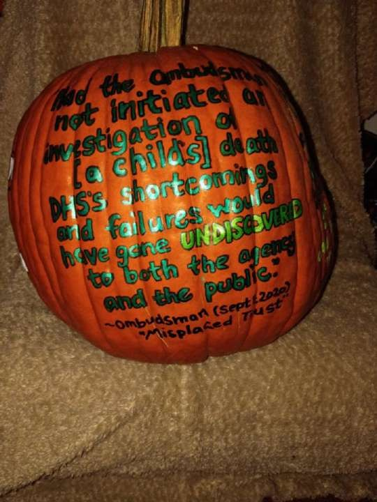
Side · Ombudsman
"Had the Ombudsman not initiated an investigation of [a child's] death, DHS's shortcomings and failures would have gone UNDISCOVERED to both the agency and the public." ~Ombudsman (Sept 2020) "Misplaced Trust"
The identifying name is withheld; brackets reflect the inscription.
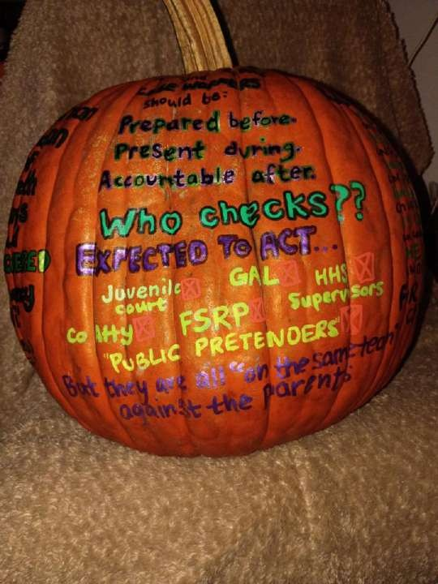
Back · Expected to act
Investigators and Case Workers should be: Prepared before. Present during. Accountable after. Who checks?? EXPECTED TO ACT... Juvenile court ☒ GAL ☒ HHS Supervisors ☒ Co Atty ☒ FSRP ☒ "PUBLIC PRETENDERS" ☒ But they are all "on the same team" against the parentsArtist’s voice
The final line is the artist’s characterization, not an independently verified finding or legal conclusion.
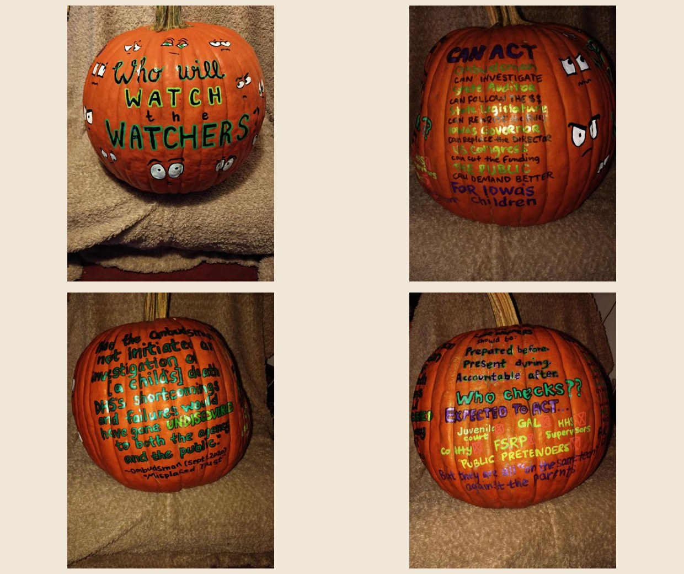
Remembering Natalie Finn and Sabrina Ray, both 16
This white pumpkin honors Natalie Finn and Sabrina Ray by name. Both girls died at age 16 after severe deprivation of food in their adoptive homes. The memorial is an act of remembrance, not an attempt to reduce either girl to the circumstances of her death. Their lives mattered before the headlines, and they matter now.
Natalie Finn and Sabrina Ray were daughters before they became subjects of investigations, news stories, and official reports. Their deaths demand more than a recounting of agency failures. They deserve to be remembered as people, with lives, relationships, and families whose grief should not be invisible.
Public discussion often centers on adoptive households, agency decisions, criminal proceedings, and institutional reform. It must also leave room for the children’s families of origin. We do not presume to know what Natalie’s or Sabrina’s birth parents experienced, what relationships were possible, or how they wish to be remembered. Their perspectives deserve dignity and space, not assumptions or invented stories.
The Iowa Office of Ombudsman documented serious failures in the State’s response to warnings about these girls. In Sabrina’s case, the Ombudsman reported that DHS did not conduct its own internal review after her death. Subsequent reporting also raised concerns about the limited activity of a child-welfare task force formed through litigation. These documented concerns warrant continued public scrutiny; they do not, by themselves, establish the present circumstances of any other household.
Remembrance is not accountability, and accountability is not complete when the public stops asking questions. We honor Natalie and Sabrina by speaking their names, respecting their families, and insisting that children’s safety and family voices remain central to reform.
When a child dies after being separated from their family of origin, whose grief is acknowledged, whose voice is heard, and whose loss becomes part of the public record?
Natalie Finn — A Tragedy of Errors (Ombudsman, 2020)
Sabrina Ray — Misplaced Trust (Ombudsman, 2020)
Reporting on the task force and internal reviews
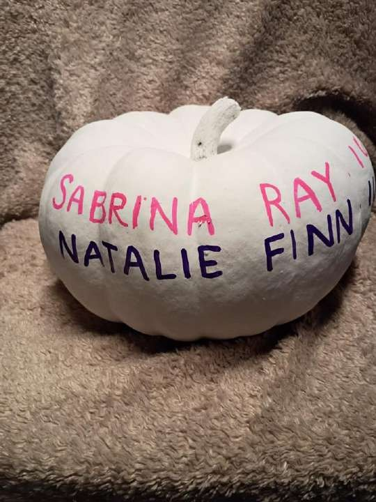
Whole pumpkin
Natalie Finn — 16 years old — RIP. REMEMBER HER! Sabrina Ray — 16 years old — RIP. REMEMBER HER!
The inscriptions honor Natalie and Sabrina by name. The linked public Ombudsman investigations document the circumstances and child-protection failures; the memorial photographs show the artwork as painted.
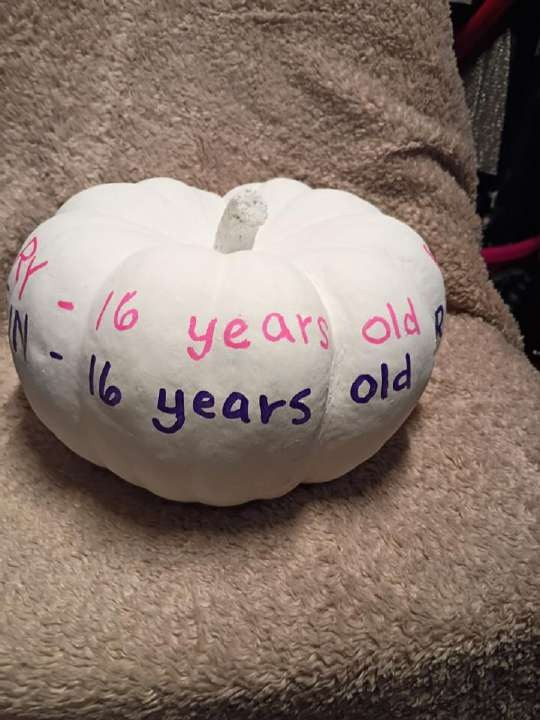
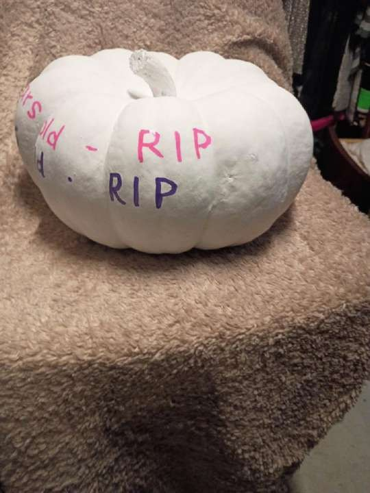
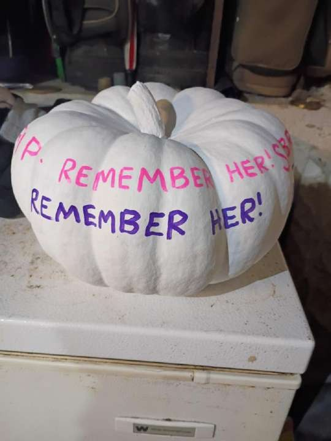
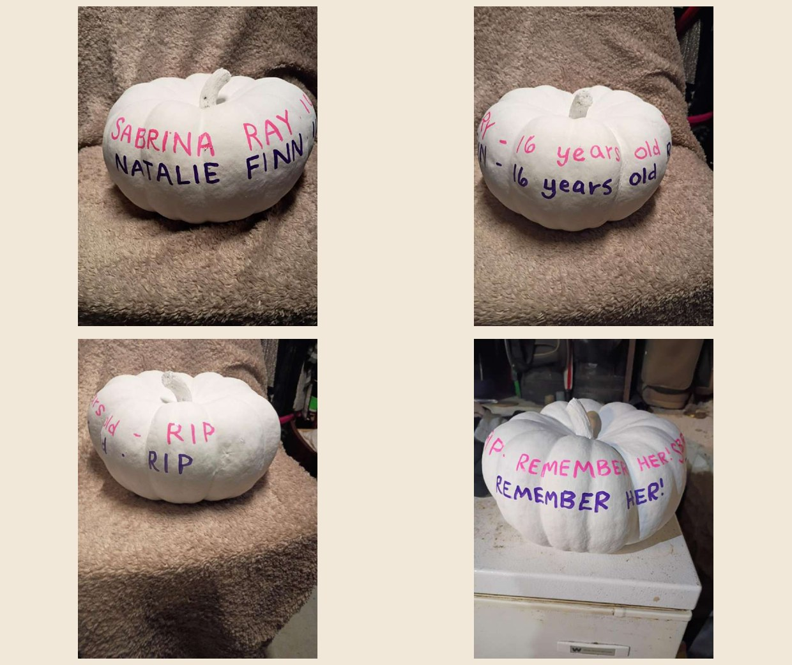
The documentary record also includes actions, reforms, and commitments described by Iowa agencies and federal reviewers.
Every open-records request behind these pumpkins, with dates and status: ORR Log
These documents describe a pattern that has been reported for years. We are asking the Iowa Auditor of State’s office to look at how the system checks itself.
Read the audit requestOpen the full hub